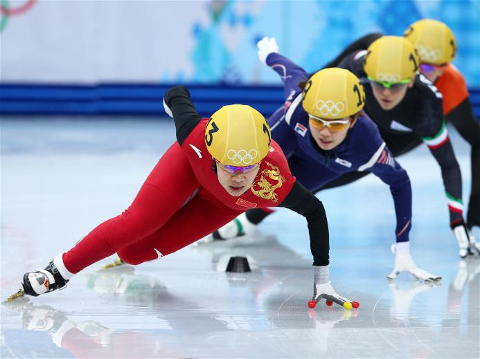

Драйв шорт-трека, красота фристайла и решающие хоккейные матчи


Сегодня спортсмены поведут борьбу за звание олимпийского чемпиона в таких видах, как биатлон, горные лыжи, скоростной бег на коньках, шорт-трек, лыжное двоеборье, фристайл и сноуборд. Кроме того, во вторник будет определен полный состав участников четвертьфинала мужского хоккейного турнира.
В воскресенье на пути мужской биатлонной гонки с общего старта встала погода, однако сегодня болельщики должны увидеть состязание 30 лучших биатлонистов планеты, где главным фаворитом является двукратный олимпийский чемпион Мартен Фуркад.
В женском гигантском слаломе после Игр в Ванкувере доминирует словенка Тина Мазе, которая одержала пять побед в Кубке мира-2012/13. Конкуренцию обладательнице золота Сочи составят 18-летняя американка Микаэла Шиффрин, швейцарка Лара Гут, австрийка Анна Феннингер, а также шведки Джессика Линделль-Викарбю и Мария Пиетиля-Хольмнер. Любопытно, что в необычном для себя качестве на трассу выйдет скрипачка Ванесса Мэй, которая под фамилией Ванакорн представляет Таиланд.
Штурмовать ледовые дорожки «Адлер-Арены» в борьбе за медали на 10 000 м среди мужчин будут титулованный голландец Свен Крамер, его соотечественники Йоррит Бергсма и Боб де Йонг, бельгиец Барт Свингс, а также чемпион Ванкувера кореец Ли Сын Хун.
В «Айсберге» шорт-трекистки разыграют комплект наград в эстафете на 3000 м. Борьбу за золото поведут спортсменки из Южной Кореи во главе с серебряным призером Сочи на дистанции 1500 м Шим Сук Хи и олимпийские чемпионки Ванкувера китаянки, среди которых уже две победительницы нынешних Игр – Ли Цзяжоу и Чжоу Ян. Конкуренцию им составят команды Канады и Италии. Предварительные забеги состоятся на дистанциях 1000 м у женщин и 500 – у мужчин.
Без чемпиона мира в лыжном двоеборье Эрика Френцеля медали в личных соревнованиях среди мужчин разыграют японец Акито Ватабе, француз Джейсон Лами-Шаппюи, а также норвежцы Магнус Крог, Магнус Ховдаль Моан и Хавард Клементсен.
Четвертой по счету дисциплиной фристайла, в которой определятся медалисты, станет хаф-пайп. Лыжный хаф-пайп как у мужчин, так и у женщин впервые представлен в олимпийской программе. Конкуренцию чемпиону мира американцу Дэвиду Вайзу должны составить его партнеры по команде – Аарон Бланк, Торин Ятер-Уоллес и Лиман Куррье. Помешать им могут француз Кевин Роллан и канадец Майкл Риддл.
Во вторник пройдет отложенный из-за погоды старт в сноуборд-кроссе среди мужчин. Основным фаворитом в этой дисциплине является представитель Австрии Маркус Шайрер, его главный конкурент – опытный американец Натан Холланд.
В мужском хоккейном турнире наступила пора решающих матчей – квалификационный раунд за право играть в 1/4 финала Олимпиады. Первыми на лед выйдут сборные Австрии и Словении, позже на льду «Большого» норвежцы постараются противостоять россиянам. В 21.00 по московскому времени начнутся два заключительных матча, где сборные Швейцарии и Латвии сыграют свой второй очный матч на турнире, а Чехия сразится со Словакией.